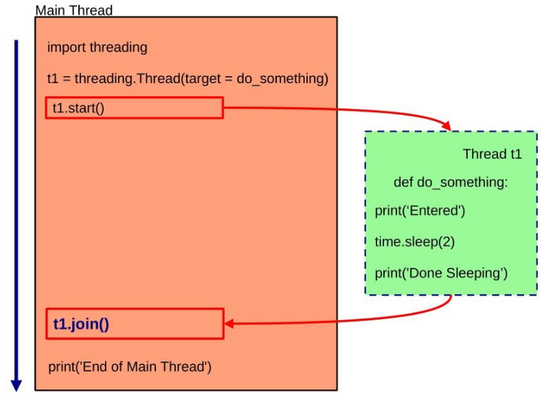
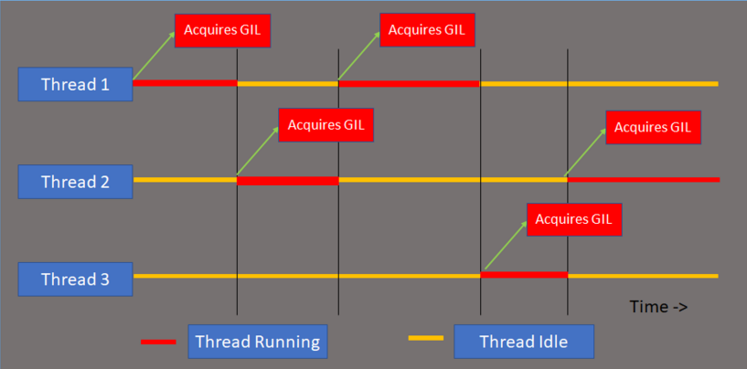

Principalmente python mette a disposizione due moduli per la programmazione concorrente:
threading: permette la creazione di software multi-thread.
multiprocessing: permette la creazione di software multi-process.
Entrambi i moduli mettono a disposizione i meccanismi necessari a supportare l’esecuzione di codice concorrente.
8.1 Il modulo threading
Il modulo threading mette a disposizione un’interfaccia di alto livello per il multi-threading, costruita a partire dal modulo _thread.
_thread mette a disposizione primitive di basso livello per l’avvio e la sincronizzazione di thread, ma il suo utilizzo è deprecato
Il modulo threading mette di disposizione un insieme di classi, come:
Thread
Thread-local Data
Lock/RLock
Condition
Semaphore
Event
8.1.1Thread class
La classe Thread rappresenta un’attività che esegue in un flusso di controllo separato (un thread).
Esiste un oggetto “main thread” (istanza della classe _MainThread) che corrisponde al flusso di controllo associato all’intero programma in Python.
import threadingimport loggingimport time# Configurazione per vedere il nome del thread tra parentesilogging.basicConfig( level=logging.DEBUG,format='(%(threadName)-10s) %(message)s',)def compito_secondario(): logging.debug('Avvio del compito nel thread secondario...')# altro modo per vedere il nome del threadprint(f"Thread attuale: {threading.current_thread().name}\n") time.sleep(2) logging.debug('Compito terminato.')if__name__=="__main__": logging.debug('Siamo nel thread principale!')# Creazione di un thread secondario t1 = threading.Thread(target=compito_secondario, name='MioThread-1') t1.start()# altro modo per vedere il nome del threadprint(f"Thread attuale: {threading.current_thread().name}\n")print(f"Lista di tutti i thread vivi: {threading.enumerate()}") t1.join() logging.debug('Fine del programma.')
(MainThread) Siamo nel thread principale!
(MioThread-1) Avvio del compito nel thread secondario...
Thread attuale: MainThread
Lista di tutti i thread vivi: [<_MainThread(MainThread, started 139772551838656)>, <Thread(IOPub, started daemon 139772236961472)>, <Heartbeat(Heartbeat, started daemon 139772228568768)>, <Thread(Thread-1 (_watch_pipe_fd), started daemon 139772203390656)>, <Thread(Thread-2 (_watch_pipe_fd), started daemon 139771858908864)>, <ControlThread(Control, started daemon 139771850516160)>, <ShellChannelThread(Shell channel, started daemon 139771842123456)>, <HistorySavingThread(IPythonHistorySavingThread, started 139771828868800)>, <Thread(MioThread-1, started 139771456255680)>]
Thread attuale: MioThread-1
(MioThread-1) Compito terminato.
(MainThread) Fine del programma.
Tutti i thread in python condividono lo spazio di memoria del loro processo padre
→ meno overhead per la comunicazione e quindi cooperazione e competizione.
Esistono vari modi per creare un thread in python, due dei quali sono:
Inizializzare un oggetto Thread, passando un “callable object” al costruttore della classe
import threadingdef fun():print(f"[{threading.current_thread().name}] thread running")if__name__=="__main__":# creating thread t1 = threading.Thread(target=fun, name="ThreadFun")# starting thread t1.start()# wait until the thread finishes# t1.join()# potrei anche dare un limite di tempo massimo# timeout oltre il quale il mainThread non attende più la terminazione t1.join(timeout=5) #5s
[ThreadFun] thread running
Creare una classe che estende quella Thread, ridefinendo il metodo run()
import threadingclass MyThread(threading.Thread):def run(self):print(f"[{threading.current_thread().name}] thread running")if__name__=="__main__":# creating thread t1 = MyThread()# starting thread t1.start()# wait until the thread finishes t1.join()
[Thread-116] thread running

Alcuni metodi messi a disposizione della classe Thread sono:
group: riservato per future implementazioni di ThreadGroup. Deve essere None.
target: rappresenta il callable object che sarà invocato dal metodo run.
name: nome del thread.
args: tupla contenente gli argomenti da passare all’invocazione del target.
kwargs: dizionario di keywords da passare all’invocazione del target.
daemon: booleano che specifica se il thread deve essere un demone o meno.
start()
Avvia il thread, portando all’esecuzione del metodo run non appena il thread sarà schedulato.
run()
Metodo che contiene il corpo del thread, e che ne rappresenta il comportamento.
join(timeout=None)
Metodo bloccante, che attende fino alla terminazione (naturale o con eccezioni) del thread.
timeout, numero floating point utilizzato per definire il tempo massimo di attesa (in secondi).
is_alive()
Metodo che ritorna se il thread è alive o meno.
Dovrebbe essere utilizzato in combinazione con il metodo join quando viene specificato un timeout; in questo caso infatti join ritorna sempre None, anche nel caso di timeout scaduto.
8.1.1.1 Ciclo di vita dell’oggetto thread
Un thread è ancora una volta trattato come oggetto Python.
È possibile invocare qualsiasi metodo o accedere a qualsiasi attributo dell’oggetto thread in qualsiasi momento, finché l’oggetto esiste.
La chiamata join() permette di attendere che il thread finisca l’esecuzione, ma non distrugge l’oggetto thread.
---------------------------------------------------------------------------RuntimeError Traceback (most recent call last)
CellIn[15], line 12 10 m.start()
11 m.join()
---> 12m.start()File /usr/lib64/python3.14/threading.py:989, in Thread.start(self) 986raiseRuntimeError("thread.__init__() not called")
988ifself._started.is_set():
--> 989raiseRuntimeError("threads can only be started once")
991with _active_limbo_lock:
992 _limbo[self] = selfRuntimeError: threads can only be started once
8.1.1.2daemon thread vs non-daemon thread
NOTA: Jupiter ignora totalmente questo flag, se provassimo a settarlo a Treu lo considera comunque False
Un thread può esser contrassegnato come “thread demone”.
Il significato di questo flag è che l’intero processo Python termina quando rimangono solo thread di tipo daemon
In altre parole, il programma non può terminare se c’è almeno un thread non-daemon ancora vivo.
Il valore iniziale, per la proprietà daemon, è ereditato dal thread da cui è stato creato.
Tale flag può esser impostato tramite il costruttore oppure tramite la proprietà deamon.
import threadingdef func():print("Funzione del thread")t1 = threading.Thread(target=func)t1.daemon =True# /False
Quello che ci andiamo a riferire attraverso t1.daemon è la proprietà definita nel modulo threading:
@daemon.setterdef daemon(self, daemonic):ifnotself._initialized:raiseRuntimeError("Thread.__init__() not called")if daemonic andnot _daemon_threads_allowed():raiseRuntimeError('daemon threads are disabled in this interpreter')ifself._started.is_set():raiseRuntimeError("cannot set daemon status of active thread")self._daemonic = daemonic
Nel linguaggio Linux-like daemon è processo in background.
In Python invece sia daemon che non-daemon girano in background, la differenza è solo nella gestione della terminazione.
I thread daemon vengono interrotti alla terminazione del processo.
Le loro risorse (come file aperti, transizioni di database, ecc) potrebbero non essere rilasciate correttamente.
Se si vuole che i propri thread si arrestino in maniera graduale, bisogna renderli non-daemon e utilizzare meccanismi di segnalazione adeguati (es, un evento).
La differenza principale nell’utilizzare un thread non-daemon e quella di utilizzare il metodo join() a fine programma, è il meccanismo sottostante e il modo in cui l’interprete Python gestisce la chiusura.
Il thread non-daemon: attesa “implicita”
In python, un thread non-daemon agisce come un salvavita per l’intero processo.
L’intero processo non può terminare finché c’è almeno un thread non-daemon ancora vivo.
Quando il main Thread arriva all’ultima riga di codice ed esce, l’interprete non chiude il programma immediatamente. Prima controlla se ci sono thread non-daemon attivi. Se ne trova, resta in uno stato di attesa finché questi non terminano naturalmente.
La gestione è automatica dell’interprete.
Il metodo join()
Il join() non è una proprietà del thread ma un comando bloccante che il programmatore impone.
Permette di avere una granularità maggiore sulla terminazione dei vari thread all’interno dell’applicazione software.
Quando esegui t1.join(), dal main thread, questo si blocca a quella riga fintantoché il thread t1 non termini la propria esecuzione.
Utilizzo dei non-daemon thread>:
Elaborazione di file: per evitare trasmissioni di dati incomplete o corrotte.
Richieste di rete.
Elaborazione di dati in background.
Utilizzo dei daemon thread>:
Logging
Attività di manutenzione
Monitoraggio dei servizi in background
8.1.2Thread-local Data: the local class
Poiché i thread condividono lo spazio di memoria del loro processo padre, potrebbe essere necessario definire variabili locali ai thread, per evitare effetti collaterali indesiderati.
Python fornisce un oggetto di tipo local se è necessario memorizzare dati unici per ogni thread.
local permette di:
creare un’istanza della classe local attraverso threading
salvare gli attributi che si vuole rendere locali al thread su tale istanza.
Tutti i dati storicizzati nell’istanza local saranno differenti per ogni thread
import threadingimport loggingimport randomlogging.basicConfig(level=logging.DEBUG,format='(%(threadName)-0s)%(message)s',)def show(d):try: val = d.valexceptAttributeError: logging.debug('No value yet')else: logging.debug('value=%s', val)def f(d): show(d) d.val = random.randint(1, 100) show(d)if__name__=='__main__': d = threading.local() show(d) d.val =999 show(d)for i inrange(2): t = threading.Thread(target=f, args=(d,)) t.start()
(MainThread) No value yet
(MainThread) value=999
(Thread-154 (f)) No value yet
(Thread-154 (f)) value=57
(Thread-155 (f)) No value yet
(Thread-155 (f)) value=82
ESEMPIO SENZA threading.local
import threadingimport timedata = {} ## data è globale ad ogni threaddef worker(name, value):global data data['user'] = value ## data viene sovrascritto dipendentemente dalla velocità relativa dei thread -> race condition time.sleep(1)print(f"{name} vede user =", data['user'])threads = [threading.Thread(target=worker, args=("T1", "Alice")),threading.Thread(target=worker, args=("T2", "Bob")),]for t in threads: t.start()for t in threads: t.join()
T1 vede user = Bob
T2 vede user = Bob
import threadingimport timedata = threading.local() # data è locale ad ogni threaddef worker(name, value): data.user = value time.sleep(1)print(f"{name} vede user = {data.user}")threads = [threading.Thread(target=worker, args=("T1", "Alice")),threading.Thread(target=worker, args=("T2", "Bob")),]for t in threads: t.start()for t in threads: t.join()
T1 vede user = Alice
T2 vede user = Bob
8.2Lock class
La classe Lock implementa la rispettiva primitiva di sincronizzazione di basso livello fornita dal modulo _thread.
Un lock può trovarsi in due stati: locked o unlocked.
I lock sono creati nello stato unlocked.
Quando un thread acquisisce un lock, il lock passa allo stato locked.
Successive acquisizioni dello stesso lock da altri thread, porteranno i thread ad essere posti in attesa.
Quando un thread rilascia un lock precedentemente acquisito, il lock passa in stato unlocked.
Uno degli eventuali thread in attesa sul lock sarà risvegliato: la scelta del thread varia a seconda delle implementazioni Python.
La classe lock prevede due metodi per l’acquisizione e rilascio di lock.
acquire():
Quando lo stato del lock è unlocked, il metodo cambia lo stato in locked e ritorna immediatamente.
Quando lo stato è locked, il metodo blocca il thread chiamante fino a quando un altro thread non invoca release() per cambiare lo stato in unlocked.
release():
Può essere invocata solo quando lo stato del lock è locked, e porta al passaggio del lock nello stato unlocked.
acquire(blocking=True, timeout=-1): acquisisce un lock
ritorna True se il lock è acquisito, False in caso contrario.
blocking: definisce se la chiamate è bloccante
True (default), la chiamata è bloccante se il lock è già stato precedentemente acquisito.
False, la chiamata ritorna immediatamente restituendo False in caso in cui il lock è locked.
timeout: imposta un tempo massimo di attesa
se il timeout (valore floating point) è positivo (default -1), il chiamante resterà bloccato per un massimo timeout secondi
Allo scadere del timeout, il metodo restituirà False
release(): rilascia un lock e ritorna (non prevede un valore di ritorno)
locked() verifica lo stato di un lock.
Se lo stato è locked, ritorna True
from threading import Thread, Lockcounter =0def increase(by, lock):global counter lock.acquire()# sezione critica local_counter = counter local_counter += by counter = local_counterprint(f"coutner={counter}") lock.release()if__name__=="__main__": lock = Lock()# create threads t1 = Thread(target=increase, args=(10,lock)) t2 = Thread(target=increase,args=(20,lock))# start thread t1.start() t2.start()# wait for the threads to complete t1.join() t2.join()print(f"the final counter is {counter}")
coutner=10
coutner=30
the final counter is 30
8.2.2with e primitive di sincronizzazione
Lo statement with è utilizzato per semplificare l’accesso ad una risorsa acquisendola e rilasciandola al termine del blocco istruzioni specificato.
Per la primitiva di locking, è possibile acquisire il lock con with e rilasciarlo automaticamente al termine dell’ultima istruzione nel blocco istruzioni.
Tutti gli oggetti che possono essere utilizzati con with sono detti context manager e sono gli aggetti di classi che implementano il metodo __enter__() e __exit__().
Nel caso di Lock ci aspettiamo che nell’implementazione di __enter__ ci sia una acquire() e nell’implementazione di __exit__ ci sia una release.
RLock implementa i reentrant lock: lock che possono essere acquisiti più volte dallo stesso thread.
RLock è utile negli scenari in cui lo stesso thread potrebbe avere bisogno di acquisire un blocco già in suo possesso.
(Es: funzioni ricorsive, metodi che chiamano altri metodi bloccanti o sezioni critiche innestate)
Oltre al concetto di stato locked/unlocked, i reentrant lock prevedono due ulteriori concetti:
owning thread: quale thread che ha acquisito il lock.
recursion level: per tenere traccia del numero di acquisizioni fatte dallo stesso thread.
Come la classe Lock, sono previsti i meotodi acquire e release per modificare lo stato.
Due principale differenze sono:
se la acquire() è invocata da un thread che già ha acquisito il lock (owing thread), la chiamata non è bloccante e viene incrementato il recusion level.
la release() rilascia il lock e decrementa il recusione level
solo quando il recursion level diventa pari a zero, il lock passa allo stato unlocked, e potrà essere effettivamente acquisito da un altro thread.
import threadingclass SharedResource:def__init__(self):self.lock = threading.RLock()# se provassimo a mettere un lock normale andremo in deadlock#self.lock = threading.Lock()self.value =0def increment(self):withself.lock:self.value +=1self.log() # chiamata ad un metodo che utilizza il lockdef log(self):withself.lock:print(f"Value is now: {self.value}")resource = SharedResource()def worker():for _ inrange(5): resource.increment()threads = [threading.Thread(target=worker) for _ inrange(2)]for t in threads: t.start()for t in threads: t.join()
Value is now: 1
Value is now: 2
Value is now: 3
Value is now: 4
Value is now: 5
Value is now: 6
Value is now: 7
Value is now: 8
Value is now: 9
Value is now: 10
8.4Condition class
Condition(lock=None): costruttore della classe.
lock: rappresenta il lock da associare alla condition variable. Se impostiamo a None (default), un RLock sarà creato automaticamente.
acquire(): chiama il metodo acquire() del lock associato alla condition variable.
release(): chiama il metodo release() del lock associato alla condition variable.
wait(timeout=None): attende fino alla notifica, o fino alla scadenza di un timeout.
timeout: imposta un tempo massimo di attese in secondi
il metodo rilascia il lock e resta bloccato dino alla chiamata della notify() o notify_all() da parte di un altro thread sulla stessa CV, o fino alla scadenza del timeout.
il lock viene riacquisito non appena il thread è risvegliato, ed il metodo restituisce un booleano
False: nel caso di timeout scaduto
True: in tutti gli altri casi
wait_for(predicate, timeout=None): attende fino a quando una condizione diventa True
predicate: deve essere una condizione o un callable object che ritorni un booleano
timeout: massimo tempo di attesa in secondi
notify(n=1): risveglia il numero di thread indicati dal parametro n in attesa sulla CV; di defaul è pari a 1.
notify_all(): risveglia tutti i thread in attesa sunna CV
8.4.1 Esempio
import threadingcv_lock = threading.Lock()cv = threading.Condition(lock=cv_lock)# Consume on itemwith cv:whilenot an_item_available(queue): cv.wait() get_an_available_item(queue)# Produce one itemwith cv: make_an_item_available(queue) cv.notify()
Oppure avrei potuto scrivere, nel consumatore:
# Consume one itemwith cv: cv.wait_for(an_item_is_available) get_an_available_item()
NOTA: il ciclo while che verifica la condizione è necessario.
L’utilizzo di with cv, evita la necessità di dover richiamare:
cv.acquire() all’inizio della sezione critica
cv.release() alla fine della sezione critica
Quando un thread viene risvegliato dalla notify, la condizione su cui era in attesa potrebbe non essere più verificata
L’alternativa proposta sarebbe quella di utilizzare wait_for()
Vediamo la sua implementazione:
def wait_for(self, predicate, timeout=None):"""Wait until a condition evaluates to True. predicate should be a callable which result will be interpreted as a boolean value. A timeout may be provided giving the maximum time to wait. """ endtime =None waittime = timeout result = predicate()whilenot result:if waittime isnotNone:if endtime isNone: endtime = _time() + waittimeelse: waittime = endtime - _time()if waittime <=0:breakself.wait(waittime) result = predicate()return result
8.5Semaphore class
la classe semaphore permette di istanziare un oggetto semaforo, il quale gestisce un contatore interno:
inizializzato alla creazione del semaforo
decrementato ad ogni operazione di acquire()
incrementato ad ogni operazione di release()
Quando il contatore arriva al valore zero, come conseguenza di operazione di acquire(), il thread chiamante viene bloccato fino a quando non viene effettuata una operazione di release() da un altro thread sullo stesso oggetto Semaphore.
Le primitive fornite dalla classe Semaphore sono le seguenti:
class threading.Semaphore(value=1): costruttore della classe.
value: rappresenta il valore a cui è inizializzato il semaforo (default 1)
acquire(blocking=True, timeout=None): acquisisce un semaforo
se invocato senza parametri:
se il valore del contatore èmaggiore di zero, decrementa il valore di 1 e ritorna True
se il valore del contatore è zero, la chiamata è bloccante per il thread che l’ha invocata.
Il thread sarà risvegliato in seguito ad una release(); al risveglio, il contatore (se maggiore di zero) sarà decrementato, e sarà ritornato True
blocking: se settato a False, la chiamata non è bloccante. Pertanto, ritorna False immediatamente invece di bloccare il chiamante.
timeout: rappresenta il massimo tempo (in secondi) per cui il chiamante resta bloccato sull’acquire(). Se il timeout scade, il metodo ritorna False.
release(n=1): rilascia un semaforo, incrementando di un valore pari a n il contatore. Un numero di thread pari a n viene ad essere risvegliato.
from threading import*from time import sleepfrom random import random# creating thread instance where count = 3obj = Semaphore(value=3)def display(name): obj.acquire() value = random() sleep(value)print(f"Thread {name} got {value}") obj.release()if__name__=="__main__":# creating and starting multiple threads threads = [Thread(target=display, args=(f"Thread-{i}",)) for i inrange(10)]for i inrange(10): threads[i].start()# wait for the threads to complete for i inrange(10): threads[i].join()
La classe Event fornisce un semplice meccanismo di comunicazione tra thread:
attraverso un Event, un thread può segnalare un evento per il quale altri thread sono in attesa
ogni Event è caratterizzato da un flag interno (booleano) che può essere settato a True con il metodo set(), e resettato a False con il metodo clear()
Un thread che è in attesa di un determinato evento, può utilizzare il metodo wait() sull’evento.
Il thread resterà bloccato fino a quando il flag dell’evento sarà settato a True
I metodi della classe Event sono i seguenti:
is_set(): ritorna True se il flag interno è settato a tale valore; False in caso contrario.
set(): setta il flag interno al valore True; tutti i thread in attesa dell’evento, vengono risvegliati.
clear(): setta il flag interno al valore False; tutti i thread che invocheranno una wait() sull’evento saranno bloccati.
wait(timeout=None): pone il thread in attesa che il flag interno venga settato a True
se il flag è già True, ritorna immediatamente True
in caso contrario, pone il thread in attesa fino al timeout (se settato)
timeout: valore floating point che rappresenta l’attesa massima in secondi sul metodo wait(). Alla scadenza del timeout, il metodo ritorna False
8.6.1 Esempio
import threading as thdimport timedef task(event, timeout):print(f"Started thread but waiting for event...")# make the thread wait for event with timeout set event_set = event.wait(timeout)if event_set:print(f"Event received, releasing thread...")else:print("Time out, moving ahead without event...")if__name__=="__main__":# initializing the event obj e = thd.Event()# starting the thread thread = thd.Thread(target=task, name="Event-Thread", args=(e,4)) thread.start()# sleeping the main thread for 3 seconds time.sleep(3)# generating the event e.set()print("Event is set")# wait for the thread to complete thread.join()
Started thread but waiting for event...
Event is setEvent received, releasing thread...
8.7 DA RICORDARE
Il lock non serve a proteggere “l’accesso alla risorsa” in senso letterale — serve a proteggere lo stato che descrive chi sta usando la risorsa.
9 Multi-threading: Global Interpreter Lock (GIL)
Meccanismo utilizzato in Python per assicurare che un solo thread alla volta possa eseguire bytecode
semplifica l’implementazione dell’interprete
rende l’object model Python implicitamente “safe” da accessi concorrenti
nato per relizzare thread-safe memory management, richiesto dalle librerie C utilizzate da Python.
Il colpevole è il Reference Counting. Python utilizza un contatore di riferimenti per ogni oggetto per sapere quando de-allocarlo. Senza GIL, due thread potrebbero incrementare lo stesso contatore simultaneamente, causando:
Memory leak
Crash

VANTAGGI:
Permette di rendere facilmente multi-threaded l’interprete Python, a discapito del parallelismo
Dovendo gestire un solo lock, migliora le performance degli applicativi single-thread
Le librerie C non thread-safe possono essere facilmente integrate
SVANTAGGI:
Riduce il livello di parallelismo ottenibile su macchine multi-processore
Impatta principalmente i task CPU-bound, in quanto è rilasciato per task I/O bound
Alcuni moduli (sia standard che di terze parti) sono progettati per rilasciare il GIL quando eseguiti task che includono operazioni di I/O bloccanti (es. time.sleep()).
Quindi questo previene il che un thread possa bloccare l’intera applicazione se esegue una chiamata bloccante.
Alcune librerie ce sfruttano C, come Numpy, rilasciano volontariamente il GIL poiché non hanno bisogno dell’interprete.
Tentativi passati di rimuovere il GIL non hanno avuto successo:
riduzione delle performance degli applicativi single-thread
aumento della complessità dell’interprete
necessità di modificare tutte le estensioni delle librerie C che sfruttano il GIL
GIL oggi:
In CPython normale, non è possibile disabilitare il GIL a run-time ma da Python 3.13 esiste una build free-threaded in cui il GIL è disabilitato.
In Python 3.14 questa build è supportata ufficialmente, ma resta opzionale, non è quella predefinita; è possibile fare il build dell’interprete con l’opzione --disable-gil.